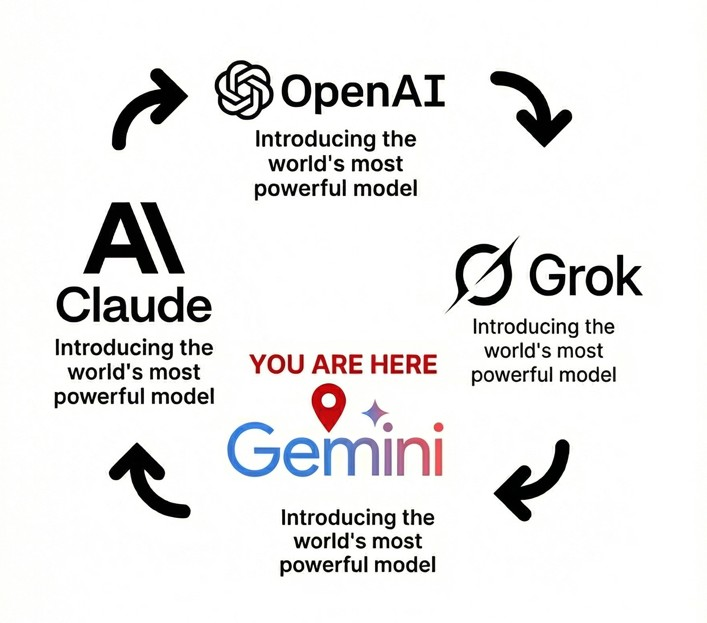
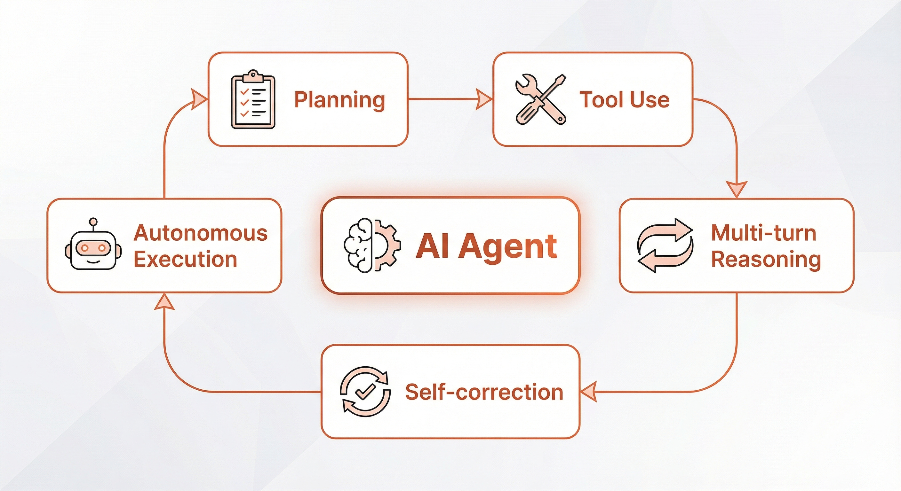
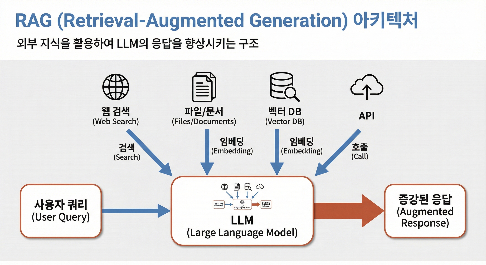

AI 페어 프로그래밍 완전 가이드
Model, Agent, Pilot - AI 코딩의 3요소와 실전 활용법
AI 업계 최신 트렌드
3일 간격으로 "세계 최고 모델" 타이틀이 바뀌는 시대입니다.
급변하는 AI 모델 생태계
2025년 11월 하순, AI 업계는 역사상 가장 치열한 경쟁을 벌이고 있습니다. 11월 한 달만 GPT-5.1, Grok 4.1, Gemini 3가 연달아 출시되며 매주 "세계 최고" 타이틀이 바뀌었습니다.
11월의 전쟁: AI Autumn 2025
- 11월 13일: OpenAI GPT-5.1 & GPT-5.1-Codex 출시
- 11월 17일: xAI Grok 4.1 - LMArena Text Arena 1위 탈환 (1483 Elo)
- 11월 18일: Google Gemini 3 & Antigravity IDE 출시 - 종합 1위 (1501 Elo)
단 6일 만에 세 개의 프론티어 모델이 연달아 출시된 것입니다. 이전에는 6개월 주기였던 출시가 이제는 일주일 주기로 바뀌었습니다.
2025년 11월 22일 현재 리더보드
LMArena 종합 순위 (Text Arena)
- 1위: Gemini 3 Pro - 1501 Elo
- 2위: Grok 4.1 Thinking - 1483 Elo
- 3위: Grok 4.1 (Fast) - 1465 Elo
- 4위: Claude Sonnet 4.5 - 1445 Elo
코딩 특화 (SWE-bench Verified)
- 1위: Claude Sonnet 4.5 - 77.2%
- 2위: Gemini 3 Pro - 76.2%
- 3위: GPT-5.1 - 74.9%
감성지능 (EQ-Bench3)
- 1위: Grok 4.1 - 1586 Elo
- 2위: Grok 4.1 Fast - 상위권
수학/추론 (AIME 2025)
- 1위: Gemini 3 - 95% (툴 없음), 100% (툴 사용)
- 2위: GPT-5 - 94.6%
코딩 분야: Claude가 여전히 최강
종합 순위에서는 Gemini 3가 1위지만, 순수 코딩 작업에서는 여전히 Claude Sonnet 4.5가 최강입니다.
Claude Sonnet 4.5 SWE-bench Verified 점수 (2025년 9월)
- 실제 GitHub 이슈 해결 능력 측정
- 30시간+ 장기 작업 가능
- 에러율: Sonnet 4 9% → Sonnet 4.5 0% (내부 벤치마크)
- 가격: $3/$15 (GPT 대비 3배 비쌈)
- 그럼에도 많은 개발자가 Claude 선택
상황별 최고 모델 (2025년 11월 기준)
코딩
1위: Claude Sonnet 4.5
SWE-bench, 장기 에이전트 작업, 코드 편집 정확도 최고
대화/감성지능
1위: Grok 4.1
EQ-Bench 1위, 창의적 글쓰기, 감정 인식 탁월
종합/추론
1위: Gemini 3
LMArena 1위, 수학/과학 최강, 멀티모달 통합
속도/비용
1위: GPT-5.1 Instant
적응형 추론, 빠른 응답, 합리적 가격 ($1.25/$10)
주의: 매주 바뀌는 순위
AI 업계는 이제 주 단위로 역전이 일어나는 곳입니다:
- 이번 달만 3개의 메이저 릴리스
- 각 모델마다 특화된 강점
- 벤치마크 1위가 실전 1위는 아님
- 용도에 맞는 모델 선택이 중요
현재는 "어떤 모델이 최고인가"보다 "어떤 작업에 어떤 모델을 쓸 것인가"가 더 중요합니다. Gemini가 종합 1위지만 코딩은 Claude, 감성은 Grok, 비용은 GPT가 낫습니다.
AI 기초: 알아야 할 배경
현재 AI 기술의 기반을 이해합니다.
Transformer: 모든 것의 시작
Transformer는 2017년 Google이 발표한 딥러닝 아키텍처입니다. "Attention is All You Need" 논문에서 소개되었고, 현재 대부분의 대규모 언어 모델(LLM)의 기반이 되었습니다.
핵심 메커니즘: Attention
Attention은 문장의 각 단어가 다른 단어들과 어떤 관계를 가지는지 파악하는 메커니즘입니다.
- "강아지가 공을 물었다"에서 "물었다"의 주체가 "강아지"임을 파악
- "배를 탔다"의 "배"는 탈것, "배가 아프다"의 "배"는 신체 부위로 구분
- 단어 간의 관계를 가중치로 학습
- 병렬 처리가 가능해 학습 속도 대폭 향상
Transformer 이전의 RNN, LSTM은 순차적으로 처리해야 했기 때문에 느렸습니다. Transformer는 모든 단어를 동시에 처리할 수 있어 대규모 데이터 학습이 가능해졌습니다.
LLM의 발전
Transformer 아키텍처를 기반으로 대규모 언어 모델들이 등장했습니다.
- GPT 시리즈 (2018~): OpenAI, 생성에 특화된 자기회귀 모델
- BERT (2018): Google, 양방향 문맥 이해에 특화
- Claude (2023~): Anthropic, 안전성과 장문 추론에 특화
- Gemini (2023~): Google, 멀티모달 통합
모두 Transformer 기반이지만, 학습 데이터, 학습 방법, 파라미터 수, 최적화 방향이 다릅니다.
코딩 AI의 특수성
코딩에 특화된 AI는 일반 LLM과 다른 특성이 있습니다.
- 코드 데이터 학습: GitHub 등 공개 코드 저장소 대량 학습
- 정확성 요구: 문법 오류나 로직 결함이 즉시 드러남
- 컨텍스트 이해: 파일 간 관계, 프로젝트 구조, 의존성 파악
- 도구 통합: 컴파일러, 린터, 테스트 프레임워크 실행
- 실행 검증: 코드를 직접 실행해서 결과 확인
이런 특성 때문에 코딩 AI는 일반 LLM을 파인튜닝하거나 특화된 도구를 추가합니다.
핵심 개념 제대로 알기
AI 페어 프로그래밍에 필요한 정확한 용어를 배웁니다.
AI Agent란 무엇인가
AI Agent를 제대로 이해하려면 다음 요소들을 살펴봐야 합니다. 실질적으로 유의미한 Agent라고 부르려면 보통 이런 5가지 능력을 요구합니다.
AI Agent의 기본 아키텍처
AI Agent의 5가지 핵심 능력
1. Planning (계획 수립)
- 복잡한 작업을 분석하고 단계별 계획 수립
2. Tool Use (도구 사용)
- 웹 검색, 파일 읽기/쓰기, API 호출 등
3. Multi-turn Reasoning (멀티턴 추론)
- 여러 단계에 걸쳐 논리적으로 추론
4. Self-correction (자기 수정)
- 오류 발생 시 스스로 감지하고 수정
5. Autonomous Execution (자율 실행)
- 사람 개입을 최소화하며 작업 완수
AI Automation vs AI Agent
많은 서비스가 "AI Agent"라고 마케팅하지만 실제로는 AI Automation에 가까운 경우가 많습니다.
AI Automation
- 미리 정의된 규칙 기반 실행
- If-Then 로직 구조
- 예외 상황 대응 불가
- 사람이 모든 경로 설계
본질: 단순 자동화
AI Agent
- 상황을 판단하고 계획 수립
- 동적 의사결정
- 예외 상황 스스로 처리
- 목표만 주면 방법 선택
본질: 자율 실행
RAG: 외부 정보 활용
RAG (Retrieval-Augmented Generation)는 "검색 증강 생성"입니다. AI 모델이 학습하지 않은 정보를 외부에서 가져와 응답에 활용하는 기술입니다.
RAG (Retrieval-Augmented Generation) 작동 원리
RAG의 진짜 의미
"모델의 학습 데이터에 없는 최신 정보나 특정 지식을 외부에서 가져오는 것"
그 외부 정보가 어디에 있든 상관없습니다:
- 웹 검색 결과: 실시간 정보 활용
- 문서 파일: PDF, Word, 텍스트 등
- 벡터 DB: 임베딩으로 의미 검색
- API 데이터: 외부 시스템 호출
- 데이터베이스: 내부 비즈니스 데이터
MCP: 표준화된 도구 연결
MCP (Model Context Protocol)는 Anthropic이 2024년 11월에 공개한 오픈소스 프로토콜입니다. AI 모델이 외부 도구와 통신하는 표준을 정의합니다.
MCP가 해결하는 문제
과거에는 AI Agent가 각 도구마다 다른 API를 구현해야 했습니다. MCP는 이를 표준화합니다.
- 표준 인터페이스: 모든 도구가 같은 방식으로 통신
- 플러그인 방식: 새 도구를 쉽게 추가
- 보안: 권한 관리 통합
- 재사용성: 한 번 만든 MCP 서버를 여러 AI에서 사용
웹/앱 개발 기초 지식
AI 코딩 도구를 사용하려면 웹 개발 생태계의 기본을 알아야 합니다.
패키지 매니저와 런타임
npm (Node Package Manager)
- 자바스크립트 라이브러리를 설치/관리하는 도구
- Python의 pip와 같은 역할
- 설치: Node.js 설치 시 자동으로 포함됨
Node.js
- 브라우저 밖에서 JavaScript를 실행할 수 있게 만든 런타임
- 서버 프로그램, CLI 도구 등을 JavaScript로 작성 가능
- 설치: nodejs.org에서 LTS 버전 다운로드
주요 npm 명령어
npm install [패키지명] # 패키지 설치 npm install -g [패키지명] # 전역 설치 npm init # 새 프로젝트 초기화 npm run [스크립트] # package.json의 스크립트 실행 npx [명령어] # 설치 없이 일회성 실행
빌드 도구
웹 개발에서는 소스 코드를 "빌드"해야 브라우저에서 실행됩니다.
Webpack / Vite
- 여러 JS/CSS/이미지 파일을 하나의 번들로 묶음
- 브라우저에서 효율적으로 로딩되도록 최적화
- Vite는 Webpack보다 빠른 최신 도구
왜 빌드가 필요한가?
브라우저는 최신 JavaScript 문법이나 모듈 시스템을 직접 실행하지 못합니다.
- 최신 문법 → 구형 브라우저 호환
- 여러 파일 → 하나의 번들
- TypeScript → JavaScript
- 코드 압축 및 최적화
개발 서버 실행
# React/Vue 개발 서버 npm run dev npm start # Python 간단한 HTTP 서버 python -m http.server 8000 # Node.js 서버 실행 node server.js
Model-Agent-Pilot: AI 코딩의 3요소
AI 페어 프로그래밍을 이해하는 프레임워크입니다.
AI 페어 프로그래밍의 성과는 세 가지 요소의 조합으로 결정됩니다: Model (두뇌), Agent (도구), Pilot (사용자). 이를 말을 타는 것에 비유하면:
Model = 말 (Horse)
AI의 지능과 성능. GPT-5, Claude, Gemini 등 기반 언어 모델. 말의 체력, 속도, 지구력에 해당합니다.
Agent = 마구 (Harness)
Model과 사용자를 연결하는 인터페이스. Cursor, Claude Code, Codex CLI 등. 기수가 말을 효과적으로 제어하도록 돕습니다.
Pilot = 기수 (Rider)
AI를 사용하는 개발자. 방향을 지시하고 결과를 검증합니다. 가장 중요한 변수입니다.
1. Model: AI의 두뇌
Model은 AI 페어 프로그래밍의 기반이 되는 언어 모델입니다. 현재 시장을 주도하는 모델들:
| 모델 | 출시일 | 특징 |
|---|---|---|
| Gemini 3 Pro | 2025년 11월 18일 | LMArena 1501 Elo (1위), 종합 최강 |
| Grok 4.1 | 2025년 11월 17일 | EQ-Bench 1위, 감성지능 최강 |
| GPT-5.1 | 2025년 11월 13일 | 적응형 추론, 빠른 응답, 합리적 가격 |
| Claude Sonnet 4.5 | 2025년 9월 29일 | SWE-bench 77.2%, 코딩 최강 |
Model 선택 기준
- 코딩 작업: Claude Sonnet 4.5 (SWE-bench 1위)
- 대화/창작: Grok 4.1 (EQ-Bench 1위)
- 종합/추론: Gemini 3 (LMArena 1위)
- 속도/비용: GPT-5.1 (빠르고 저렴)
실제로는 사용하는 Agent가 지원하는 Model 중에서 선택하게 됩니다.
2. Agent: Model과 사용자를 연결
Agent는 Model을 실제로 사용할 수 있게 만드는 인터페이스입니다.
Cursor
- VSCode 기반 AI-IDE
- Composer: 멀티파일 에이전트
- Tab: 인라인 자동완성
- 월 $20
Claude Code
- 터미널 기반 에이전트
- 30시간+ 장기 작업
- MCP 네이티브 지원
- 월 $20
Cline
- VSCode 오픈소스
- 다양한 LLM 지원
- Plan/Act 모드
- 무료
Codex CLI
- OpenAI 터미널 도구
- GPT-5/o3 지원
- Compaction 기능
- ChatGPT Plus 포함
Agent의 한계 인식
- Agent는 도구일 뿐, Model의 성능을 넘어설 수 없습니다
- 자동화가 편리하지만, Pilot이 전체 흐름을 제어해야 합니다
- Agent 업데이트에 너무 집착하지 말고, 안정적인 버전을 선택하세요
3. Pilot: 가장 중요한 변수
Model과 Agent는 상품화되어 누구나 접근 가능하지만, Pilot 역량은 개인의 경험, 직관, 지식에서 나옵니다. 같은 도구를 사용해도 10배의 생산성 차이가 발생하는 이유가 여기에 있습니다.
Pilot 성능을 결정하는 4대 역량
1. 문제 분해 능력
복잡한 문제를 AI가 처리 가능한 작은 단위로 분해하는 능력. 어떤 순서로, 어떤 입도로 작업을 나누는지가 핵심.
2. AI 실패 패턴 노하우
AI가 언제, 어디서, 왜 실패하는지 경험으로 파악. 할루시네이션, 컨텍스트 오버플로우, 엣지 케이스를 사전에 방지.
3. 도메인 깊은 지식
개발하려는 시스템, 비즈니스 로직, 기술 스택에 대한 깊은 이해. AI 출력의 적절성을 즉시 판단.
4. 빠른 학습과 응변
새로운 도구를 빠르게 학습하고 예상치 못한 문제에 민첩하게 대응. 상황에 맞는 최적 전략 선택.
문제 분해 연습 예시
Bad vs Good Prompt
❌ Bad: "이커머스 사이트를 만들어줘"
✅ Good:
1단계: 기본 상품 목록 페이지 (정적 데이터) 2단계: 상품 상세 페이지 라우팅 추가 3단계: 장바구니 기능 (로컬 스토리지) 4단계: 백엔드 API 연동 각 단계를 완료할 때마다 검증 후 다음 진행
AI가 자주 실패하는 패턴
- 비동기 처리: Promise, async/await 순서 실수
- 에러 핸들링: try-catch 누락, 엣지 케이스 무시
- 컨텍스트 한계: 긴 대화에서 초반 내용 망각
- 레거시 API: 최신 문서 대신 오래된 API 사용
Pilot의 진화: Context Engineer
AI 시대의 개발자는 "코드 작성자(Coder)"에서 "컨텍스트 설계자(Context Engineer)"로 진화합니다.
기존 개발자 (Coder)
- 라인 바이 라인으로 코드 작성
- 문법과 API에 집중
- 구현 세부사항에 시간 소비
AI 시대 개발자
- 문제와 제약조건 정의
- 아키텍처와 데이터 흐름 설계
- AI 출력을 검증하고 조정
AI Slop과 바이브 코딩의 위험
2025년, AI 코딩의 급속한 확산과 함께 새로운 문제가 부각되고 있습니다: AI Slop(저품질 AI 생성 코드)과 바이브 코딩(이해하지 못한 채 AI 코드를 그대로 사용)입니다.
Google 2025 DORA Report 주요 발견
AI 도입이 코드 품질에 미친 영향:
- AI 도입 90% 증가 → 버그율 9% 증가
- 코드 리뷰 시간 91% 증가
- PR 크기 154% 증가
- 2022년 대비 2025년 개발자는 75% 더 많은 코드 커밋
- 핵심 결론: "AI는 팀을 고치지 않고 증폭시킨다"
전망: 2026년까지 기술 리더의 75%가 중간~심각한 기술 부채에 직면할 것으로 예측
AI Slop이란?
AI Slop은 AI가 생성한 저품질 코드를 의미합니다. "Slop"은 고대 영어 "sloppe"(소똥)에서 유래했습니다.
AI Slop의 특징:
- 컴파일은 되지만: 문법적으로는 맞지만 장황하고 비효율적
- 보안 취약점: 기본적인 보안 검증 누락
- 과도한 중복: 이미 있는 패키지를 또 import
- 유지보수 불가: 아키텍처 패턴 무시, 일관성 결여
- 기술 부채 폭증: 빠르게 쌓이는 정리되지 않은 코드
바이브 코딩(Vibe Coding)이란?
바이브 코딩은 AI가 생성한 코드를 제대로 이해하지 못한 채 "분위기로" 사용하는 것을 의미합니다.
Andrej Karpathy의 경고 (Dwarkesh Podcast)
"데모와 제품 사이에는 매우 큰 간격이 있습니다. 데모는 매우 쉽지만, 제품은 매우 어렵습니다. 바이브 코딩에는 이런 특성이 없습니다. 하지만 실제 프로덕션급 코드를 작성한다면, 작은 실수 하나가 보안 취약점으로 이어질 수 있기 때문에 이런 특성이 반드시 있어야 합니다."
바이브 코딩의 문제:
- 이해 없는 복사/붙여넣기: 작동 원리를 모른 채 사용
- 디버깅 불가: 문제 발생 시 원인 파악 불가능
- 검증 생략: "컴파일되니까 괜찮겠지" 착각
- Demo-to-Product Gap: 프로토타입과 실제 제품 사이의 거대한 거리 무시
실제 사례: AI Slop 청소의 시대
사례 1: 스타트업의 재앙
CSS만 아는 디자이너가 Cursor로 React 앱 전체를 만듦. 프리랜서 React 개발자를 고용해 수정했더니 100개 파일 중 90개 이상을 삭제해야 했음.
사례 2: 오픈소스의 비명
Discourse 프로젝트: AI 생성 PR이 급증하면서 코드 리뷰 부담 폭발. "AI 도구는 코드 생성을 쉽게 만들었지만, 코드 리뷰를 쉽게 만들지는 못했다."
사례 3: 프리랜서의 새 직업
유럽의 10년차 프리랜서: "최근 AI로 만든 소프트웨어를 고쳐달라는 의뢰가 폭증. 엄청난 버그, 심각한 보안 결함."
Slopsquatting 위협
AI의 hallucination을 악용한 공격. AI가 존재하지 않는 패키지를 추천하면, 공격자가 같은 이름의 악성 패키지를 배포.
핵심 원칙: 내가 감당할 수 없는 코드는 배포하지 마라
배포 책임의 기본 원칙
"AI가 생성한 코드라도, 배포하는 순간 그것은 당신의 코드입니다."
이해하지 못하는 코드를 배포하는 것은 다음과 같습니다:
- 작동 원리를 모르는 의료기기를 환자에게 사용하는 것
- 설계도를 이해하지 못한 채 건물을 짓는 것
- 성분을 모르는 약을 처방하는 것
배포 전 필수 체크리스트
1. 코드 이해도 검증
- 각 함수의 역할을 설명할 수 있는가?
- 데이터 흐름을 추적할 수 있는가?
- 에러가 발생하면 원인을 찾을 수 있는가?
- 3개월 후에도 수정할 수 있는가?
2. 품질 검증
- 단위 테스트가 있는가?
- 엣지 케이스를 처리하는가?
- 에러 핸들링이 적절한가?
- 보안 취약점은 없는가?
3. 유지보수성 검증
- 코드 스타일이 일관적인가?
- 불필요한 중복이 없는가?
- 주석이 충분한가?
- 아키텍처 패턴을 따르는가?
4. 팀 영향 검증
- 다른 팀원이 이해할 수 있는가?
- 코드 리뷰를 통과할 수 있는가?
- 기술 부채를 만들지 않는가?
- 팀의 코딩 표준을 따르는가?
올바른 AI 코딩 접근법
바이브 코딩 → 바이브 엔지니어링
단순히 코드를 생성하는 것을 넘어서:
- "이 코드의 잠재적 보안 취약점은?"
- "이 코드를 어떻게 더 효율적으로 만들 수 있나?"
- "이 데이터베이스 쿼리를 최적화하려면?"
- "이 코드의 테스트 커버리지는 충분한가?"
AI 도구는 이런 질문에도 답할 수 있지만, 당신이 물어봐야 합니다.
AI는 당신을 증폭시킨다
Google DORA Report의 핵심 발견: "AI는 팀을 고치지 않고 증폭시킨다."
강한 팀 + AI
- 견고한 테스트
- 성숙한 플랫폼
- 명확한 아키텍처
결과: 높은 처리량과 안정적인 배포
약한 팀 + AI
- 취약한 코드 리뷰
- 높은 결합도
- 불분명한 표준
결과: 기존 문제가 더 빠르게 악화
AI는 당신의 역량을 증폭시키는 도구입니다. 좋은 습관을 가진 개발자는 더 좋아지고, 나쁜 습관을 가진 개발자는 더 나빠집니다.
진실의 순간
"AI is useful if you already know what you're doing."
AI 도구가 유용한 이유는 배경 지식과 기초가 있어야 AI가 생성한 코드의 적절성을 판단할 수 있기 때문입니다. AI Slop을 막을 수 있는 것은 결국 Pilot의 역량입니다.
주요 AI 코딩 도구
2025년 11월 시장을 주도하는 도구들입니다.
Cursor
가장 대중적. VSCode 기반, Composer로 멀티파일 편집. 월 $20.
Claude Code
터미널 강자. CLI 기반, 30시간+ 장기 작업. 월 $20.
Antigravity
구글 최신. Gemini 3 기반, 멀티패널 에이전트. 무료 (프리뷰).
GitHub Copilot
엔터프라이즈 표준. GPT-5.1 & Claude 4.5 지원. 월 $10-39.
Cline
오픈소스. VSCode 확장, 다양한 LLM 지원. 무료.
Continue
오픈소스 대안. 모든 LLM 사용 가능, 자유로운 확장. 무료.
2025년 11월 시장 트렌드
- 모델 전쟁: 3일 간격 메이저 릴리스 (GPT-5.1, Grok 4.1, Gemini 3)
- 코딩: Claude Sonnet 4.5가 SWE-bench 77.2%로 1위 유지
- 종합: Gemini 3가 LMArena 1501 Elo로 최고
- 감성: Grok 4.1이 EQ-Bench에서 압도적 1위
- 에이전트: 모든 모델이 30시간+ 장기 작업 지원
- 무료: Google Antigravity로 진입장벽 낮아짐
- 컨텍스트: 1M 토큰이 표준, Gemini 3 Deep Think 강화
- 가격 전쟁: Gemini $2/$12 vs GPT $1.25/$10 vs Claude $3/$15
어떤 도구를 선택할 것인가?
처음 시작한다면
Cursor
- VSCode와 동일한 UI
- 14일 무료 체험
- 학습 곡선 낮음
무료로 시작한다면
Antigravity 또는 Cline
- Antigravity: Gemini 3 무료
- Cline: 오픈소스, API 키만 필요
- 완전 기능 제공
터미널을 선호한다면
Claude Code
- 30시간+ 장기 작업
- MCP 네이티브 지원
- Checkpoint 기능
회사 업무라면
GitHub Copilot
- 엔터프라이즈 보안
- GPT-5.1 & Claude 4.5
- 팀 관리 기능
시작해봅시다
Cursor로 시작하는 것이 가장 무난합니다.
첫 도구 선택
처음 시작한다면 Cursor를 추천합니다. IDE 환경에 익숙하고, VSCode를 쓰던 사람이라면 바로 적응할 수 있습니다.
Cursor를 추천하는 이유
- VSCode와 거의 동일한 UI
- 기존 VSCode 설정 자동 마이그레이션
- 14일 무료 체험으로 부담 없이 시작
- Cmd+K만 알면 바로 사용 가능
- 활발한 커뮤니티와 풍부한 학습 자료
Cursor 시작하기
1. 설치
- cursor.com에서 운영체제에 맞는 버전 다운로드
- 설치 시 VSCode 설정 자동 마이그레이션 선택
- Pro 플랜 가입 (14일 무료, 이후 월 $20)
2. 기본 단축키
- Cmd/Ctrl + K: 인라인 편집 (가장 많이 사용)
- Cmd/Ctrl + L: AI 채팅 패널
- Cmd/Ctrl + I: Composer (멀티 파일 편집)
- Tab: 자동완성 수락
오픈소스 대안: Cline
무료로 시작하고 싶다면 Cline을 추천합니다.
설치:
- VSCode Extensions에서 "Cline" 검색
- 설치 후 API 키 설정 (OpenAI, Anthropic, 또는 OpenRouter)
- OpenRouter 사용 시 무료 모델 이용 가능
현실적인 주의사항
AI가 모든 것을 해결해주지 않습니다:
- 아키텍처 설계: 여전히 사람의 영역
- 비즈니스 로직: 복잡한 요구사항은 사람이 검증
- 보안: 민감한 코드는 반드시 직접 리뷰
- 테스트: AI가 생성한 테스트만으로는 부족
- 성능: 최적화는 프로파일링 후 사람이 판단
실습: 삼체 시뮬레이터 만들기
실제로 Cursor를 사용해서 프로젝트를 만들어봅시다. (30분)
실습 목표
중력으로 상호작용하는 3개의 천체를 시뮬레이션하는 프로그램을 만듭니다. 물리학의 유명한 "삼체 문제(Three-body problem)"를 시각화합니다.
만들 것
class Body { constructor(x, y, mass, color) { this.pos = new Vector(x, y); this.mass = mass; this.color = color; } update(bodies) { // Calculate gravitational force for (let other of bodies) { if (other === this) continue; this.applyGravity(other); } } }
- Canvas 기반 2D 시각화
- 3개의 천체가 뉴턴 중력으로 상호작용
- 각 천체는 다른 색상으로 표시
- 궤적(trail) 표시로 움직임 추적
- 재생/일시정지/초기화 버튼
Cursor에게 이렇게 요청하세요
Cmd+K를 누르고:
"HTML Canvas를 사용해서 삼체 문제 시뮬레이션을 만들어줘. 3개의 천체가 뉴턴 중력으로 상호작용하고, 각각 다른 색상으로 표시되고, 궤적도 남기고, 재생/일시정지/초기화 버튼도 추가해줘."
실행 방법
Cursor에서 생성된 HTML 파일을 로컬 서버로 실행:
# Python을 사용한다면 python -m http.server 8000 # Node.js를 사용한다면 npx serve # 또는 Cursor에서 Live Preview 확장 사용
브라우저에서 http://localhost:8000 접속
추가 기능 (선택)
기본 기능이 완성되면 더 복잡한 기능을 추가해보세요:
- 각 천체의 질량을 슬라이더로 조절
- 중력 상수를 조절하는 컨트롤
- 줌인/줌아웃 기능
- 총 에너지 그래프 표시
- 다양한 초기 상태 프리셋
도전 과제
기본을 완성했다면 더 나아가보세요:
- 4체 문제로 확장
- 3D 시각화 (Three.js 사용)
- 충돌 감지 및 병합
- 프리셋 시나리오 (태양-지구-달)
- 시간 역행 기능
효과적으로 사용하기
실전에서 AI 코딩 도구를 제대로 활용하는 방법입니다.
프롬프트 작성 핵심 원칙
❌ 이렇게 하지 마세요
"함수 만들어줘"
문제점:
- 무슨 함수인지 불명확
- 입출력 정의 없음
- 언어/프레임워크 미지정
✅ 이렇게 하세요
"TypeScript로 사용자 데이터 검증 함수 작성. 이메일 형식 체크, 비밀번호 길이 8자 이상, zod 라이브러리 사용."
좋은 점:
- 언어 명시
- 구체적 요구사항
- 사용할 라이브러리 지정
문제 분해의 중요성
큰 문제를 작은 단위로 나누는 것이 성공의 핵심입니다.
실전 예시: 대시보드 만들기
❌ Bad: "사용자 대시보드 만들어줘"
✅ Good:
1단계: 기본 레이아웃 (헤더, 사이드바, 메인) 2단계: 사용자 통계 카드 컴포넌트 (정적 데이터) 3단계: 차트 추가 (Chart.js) 4단계: API 연동으로 실시간 데이터 5단계: 필터링 기능 각 단계별로 검증 후 다음 진행
AI 실패 패턴 이해하기
AI가 자주 실수하는 패턴을 알면 사전에 방지할 수 있습니다.
비동기 처리 실수
Promise 체이닝 순서, async/await 위치 오류. 명시적으로 "비동기 처리를 올바르게"라고 요청하세요.
에러 핸들링 누락
try-catch 블록, null 체크, 엣지 케이스 무시. "에러 처리 포함"을 명시하세요.
컨텍스트 망각
긴 대화에서 초반 요구사항 잊음. 중요한 제약은 매번 다시 언급하세요.
구형 API 사용
최신 문서 대신 deprecated API. "최신 버전 사용"을 명시하세요.
효과적인 활용 분야
보일러플레이트
반복적인 코드 패턴, CRUD 작업, 설정 파일
문서화
함수 주석, API 문서, README 작성
테스트 코드
단위 테스트, 통합 테스트, 모킹
리팩토링
레거시 코드 개선, 구조 정리, 패턴 적용
디버깅
에러 메시지 분석, 로그 해석, 원인 파악
학습
새 기술 빠르게 습득, 예제 코드 생성
반드시 직접 검증해야 할 것들
- 보안: SQL 인젝션, XSS, 인증/인가
- 성능: 알고리즘 복잡도, 메모리 사용량
- 엣지 케이스: null 처리, 경계값 검증
- 비즈니스 로직: 요구사항과의 정확한 일치
생산성이 폭발하는 개발자 유형
AI 도구는 모두에게 도움이 되지만, 특정 성향에서는 극적인 효과를 냅니다.
문제 의식형
해결하고 싶은 문제가 명확하지만 시간/리소스 부족으로 실행 못했던 사람. AI가 실행력의 병목을 제거.
비판적 사고형
기존 방식에 의문을 품고 개선 방향이 보이지만 리팩토링 비용이 부담스러웠던 사람. AI가 실험 비용 감소.
실행 지연형
아이디어는 많지만 보일러플레이트, 환경 설정의 귀찮음으로 미루었던 사람. AI가 지루한 작업 대신.
탐구형
새 기술 탐구를 즐기고 상상력이 풍부한 사람. AI가 탐색과 실험의 파트너.
공통점: 잠재력은 있었지만 실행의 제약
이들은 모두 문제 인식, 개선 의지, 학습 욕구는 충분했지만 시간, 리소스, 귀찮음 등의 제약으로 잠재력을 발휘하지 못했습니다. AI는 이러한 제약을 제거하여 생각의 속도로 개발할 수 있게 만듭니다.
학습 리소스
더 깊이 배우기 위한 자료들입니다.
공식 문서
- Cursor: cursor.com/docs
- Claude Code: docs.anthropic.com/en/docs/agents
- Cline: github.com/cline/cline
- Codex CLI: developers.openai.com/codex/cli
- Antigravity: antigravity.google
커뮤니티
- Cursor Discord 서버
- Cline GitHub Discussions
- Reddit r/cursor, r/ClaudeAI
- YouTube 튜토리얼 채널
마치며
AI 페어 프로그래밍은 이제 선택이 아닌 필수입니다. 빠르게 변하는 환경에서 경쟁력을 유지하려면 지금 바로 시작하는 것이 좋습니다.
완벽하지 않아도 괜찮습니다. 작은 것부터 시도하고, 실패하면서 배우고, 점진적으로 익숙해지면 됩니다.
중요한 것은 AI가 대신해주는 것이 아니라, AI와 함께 더 나은 코드를 만드는 것입니다.
핵심 요약
- Model: AI의 두뇌 - Claude (코딩), Gemini (종합), Grok (감성), GPT (비용)
- Agent: 연결 도구 - Cursor, Claude Code, Antigravity, GitHub Copilot
- Pilot: 가장 중요 - 문제 분해, 실패 패턴 이해, 도메인 지식, 검증 능력
- 경고: AI Slop과 바이브 코딩 주의 - 이해하지 못하는 코드는 배포하지 마라
- 시작: Cursor 또는 Antigravity로 간단한 프로젝트부터
- 진화: Context Engineer로 발전 - AI를 증폭시키는 역량이 핵심
AI 페어 프로그래밍 완전 가이드
2025년 11월 22일 최신 업데이트